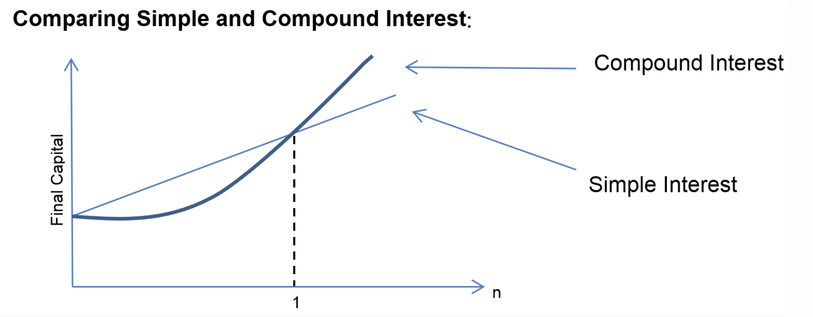

You may click here to download the PDF version.
2.1 Review
Simple interest is calculated using \[ I = Prt, \] where
\(I\): interest over \(t\) years
\(P\): principal (initial amount)
\(r\): nominal annual interest rate
\(t\): time in years
Accumulated Value:
\[ A = P + I = P(1+rt). \]Present Value:
\[ P = A(1+rt)^{-1}. \]Accumulated Value:
\[ A = P\left(1 + \frac{r}{m}\right)^{mt}. \]Present Value:
\[ P = A\left(1 + \frac{r}{m}\right)^{-mt}. \]
\(A\): accumulated value after \(t\) years
\(P\): principal
\(r\): nominal annual rate
\(m\): number of compounding periods per year
\(t\): time in years
Common compounding frequencies:
Annually: \(m=1\)
Semi-annually: \(m=2\)
Quarterly: \(m=4\)
Monthly: \(m=12\)
Daily: \(m=365\)
Compounded \(n\) times: \(m=n\)
Accumulated Value:
\[ A = Pe^{rt}. \]Present Value:
\[ P = A e^{-rt}. \]
\(A\): accumulated amount
\(P\): principal
\(r\): continuous annual rate
\(t\): time in years
The effective interest rate is the equivalent annual rate when compounding occurs \(m\) times per year.
\[ r_{\text{eff}} = \left(1 + \frac{r}{m}\right)^m - 1. \]The profit function measures the net return from producing and selling a quantity \(x\) of goods. It is defined as the difference between total revenue and total cost:
\[ P(x) = R(x) - C(x), \] where \[ R(x) = \text{total revenue}, \qquad C(x) = \text{total cost}. \]An equilibrium point in a market occurs at a quantity \(x\) at which supply and demand are equal. If \(S(x)\) denotes the supply function and \(D(x)\) the demand function, then the equilibrium quantity satisfies
\[ S(x) = D(x). \]The common value \(S(x) = D(x)\) is called the equilibrium price.
Easy ★
-
Module 2 — Easy — 1
Describe the difference between simple interest rates and compound interest rates in a few sentences.Answer
Simple interest is computed only on the original principal. Compound interest is computed on the principal and all accumulated interest, so interest earns interest.
-
Module 2 — Easy — 2
- Calculate interest earned on \$5000 with the simple interest at the rate of 5% over 5 years.
- Find the accumulated amount of the investment.
Answer
(a) \$1,250 (b) \$6,250
Full Solution
With \(P=5000\), \(r=0.05\), \(t=5\), we obtain
(a) Simple interest: \[ I=Prt=5000(0.05)(5)=1250. \]
(b) Accumulated amount: \[ A=P+I=5000+1250=6250. \]
-
Module 2 — Easy — 3
Suppose you are starting a small online business and you need to purchase some initial inventory. You have \$2500 to invest in a savings account with a 7% annual interest rate, compounded semiannually. You plan to keep the money in the account for 10 year while you are setting up your business. How much money will you have in the account after 10 year?Answer
\$4,974.47 (approx.)
Full Solution
With \(P=2500\), \(r=0.07\), \(m=2\) (semi-annual), \(t=10\), we obtain
\[ A=P\!\left(1+\frac{r}{m}\right)^{mt} =2500\!\left(1+\frac{0.07}{2}\right)^{2\cdot10} =2500(1.035)^{20}\approx 4974.47. \]
-
Module 2 — Easy — 4
Your uncle has just given you a generous gift of \$12,000 to start your college fund. You decided to place this money in a savings account that offers an 8% annual interest rate, compounded quarterly. How much money will you have in your college fund after 10 years?Answer
\$26,496.47 (approx.)
Full Solution
With \(P=12000\), \(r=0.08\), \(m=4\) (quarterly), \(t=10\), we obtain
\[ A=P(1+\tfrac{r}{m})^{mt}=12000\!\left(1+\frac{0.08}{4}\right)^{40} =12000(1.02)^{40} \approx 26{,}496.47. \]
-
Module 2 — Easy — 5
Imagine you won a small lottery of \$150,000 and you plan to invest this in a fixed deposit which offers a 10% annual interest rate, compounded monthly. You want to keep the money in the fixed deposit for 4 years while you make plans for a secure future. How much money will your investment grow to at the end of these 4 years?Answer
\$223,403.11 (approx.)
Full Solution
With \(P=150000\), \(r=0.10\), \(m=12\) (monthly), \(t=4\), we obtain
\[ A=P\!\left(1+\frac{r}{m}\right)^{mt} =150000\!\left(1+\frac{0.10}{12}\right)^{48} \approx 223{,}403.11. \]
-
Module 2 — Easy — 6
You sold inherited land for \$150,000 and put it into a savings account with a 9% annual interest rate, compounded daily. How much will you have in the account after 3 years, untouched, for your business?Answer
\$196,488.13 (approx.)
Full Solution
With \(P=150000\), \(r=0.09\), \(m=365\) (daily), \(t=3\), we obtain
\[ A=150000\!\left(1+\frac{0.09}{365}\right)^{365\cdot3} \approx 196{,}488.13. \]
Video solution
The video solution is available here .
-
Module 2 — Easy — 7
Find the effective interest rate corresponding to the 10%/year compounded semiannually.Answer
10.25% per year
Full Solution
With \(r=0.10\), \(m=2\) (semi-annually), we obtain \[ r_{\text{eff}}=\left(1+\frac{r}{m}\right)^{m}-1 =\left(1+\frac{0.10}{2}\right)^2-1 =0.1025 = 10.25\%. \]
-
Module 2 — Easy — 8
Find the effective interest rate corresponding to the 9%/year compounded quarterly.Answer
9.31% per year (approx.)
Full Solution
With \(r=0.09\), \(m=4\) (quarterly), we obtain \[ r_{\text{eff}}=(1+\tfrac{r}{m})^{m}-1=\left(1+\frac{0.09}{4}\right)^4-1 \approx 0.09308 \approx 9.31\%. \]
-
Module 2 — Easy — 9
Consider an investment of \$5000 placed in a financial instrument that provides a continuous compounding interest rate of 8% per annum. Determine the total value of this investment after a period of 4 years, assuming no withdrawals are made during this time frame.Answer
\$6,885.64 (approx.)
Full Solution
Continuous compounding uses \(A=Pe^{rt}\). With \(P=5000\), \(r=0.08\), \(t=4\), we obtain \[ A=5000\,e^{0.08\cdot4}=5000\,e^{0.32}\approx 6{,}885.64. \]
-
Module 2 — Easy — 10
A company sells pens for \$5 each. The cost to produce \(x\) pens is \[ C(x) = 50 + 2x. \]- Write the revenue function \(R(x)\).
- Write the profit function \(P(x)\).
- Find the profit when \(x = 20\).
Answer
(a) \(R(x)=5x\) (b) \(P(x)=3x-50\) (c) \(P(20)=10\)
Full Solution
(a) The revenue is price times quantity. Thus, we have \[ R(x)=5x. \]
(b) Profit is revenue minus cost. Thus, we have \[ P(x)=R(x)-C(x)=5x-(50+2x)=3x-50. \]
(c) When \(x=20\), we obtain \[ P(20)=3(20)-50=60-50=10. \]
-
Module 2 — Easy — 11
Suppose the revenue and cost functions for producing \(x\) units are \[ R(x) = 12x, \qquad C(x) = 80 + 4x. \]- Find the profit function \(P(x)\).
- Find the profit when \(x = 25\).
- Find the break-even quantity.
Answer
(a) \(P(x)=8x-80\) (b) \(P(25)=120\) (c) Break-even: \(x=10\)
Full Solution
(a) Profit is revenue minus cost, thus we obtain \[ P(x)=R(x)-C(x)=12x-(80+4x)=8x-80. \]
(b) When \(x=25\), we obtain \[ P(25)=8(25)-80=200-80=120. \]
(c) The break-even quantity is the value of \(x\) where profit is zero, thus we have \[ P(x)=0 \quad \Rightarrow \quad 8x-80=0 \Rightarrow x=10. \]
Intermediate ★★
-
Module 2 — Intermediate — 1
Diego deposited a certain sum of money in a bank 2 years ago. If the bank had been paying interest at the rate of 6% compounded continuously and he had \$12,000 on deposit today, what was his initial deposit?Answer
\(\displaystyle P \approx \$10643.045\)
Full Solution
Continuous compounding is given by \(A = Pe^{rt}\). With \(A=12000\), \(r=0.06\), \(t=2\), we obtain \[ 12000 = P e^{0.06 \cdot 2} \quad\Rightarrow\quad P=\frac{12000}{e^{0.12}}\approx 10643.045. \]
-
Module 2 — Intermediate — 2
Imagine you have \$5000, and you want to increase it to \$7500 in just 3 years by investing in a savings account. The interest is compounded monthly in this account. What would the required annual interest rate be to achieve your target?Answer
\(\displaystyle r \approx 0.1359 = 13.59\%\)
Full Solution
Using \(A = P(1 + \frac{r}{m})^{mt}\) and with \(A=7500\), \(P=5000\), \(m=12\) (monthly), \(t=3\), we obtain \[ 7500 = 5000\!\left(1+\frac{r}{12}\right)^{36} \quad\Rightarrow\quad 1.5=\left(1+\frac{r}{12}\right)^{36}. \] Taking 36th root, we have \[ 1+\frac{r}{12} = 1.5^{1/36} \quad\Rightarrow\quad r=12\bigl(1.5^{1/36}-1\bigr)\approx 0.1359. \]
-
Module 2 — Intermediate — 3
You have been presented with an investment opportunity where you can deposit \$5000 now and expect it to grow to \$8000 in 4 years. This particular investment option compounds interest semi-annually. Calculate the annual interest rate needed to reach this goal.Answer
\(\displaystyle r \approx 0.121 = 12.1\%\)
Full Solution
With \(A=8000\), \(P=5000\), \(m=2\), \(t=4\), we obtain \[ 8000 = 5000\!\left(1+\frac{r}{2}\right)^{8} \quad\Rightarrow\quad 1.6=\left(1+\frac{r}{2}\right)^8. \] Taking 8th root, we have \[ 1+\frac{r}{2}=1.6^{1/8} \quad\Rightarrow\quad r=2\bigl(1.6^{1/8}-1\bigr)\approx 0.121. \]
-
Module 2 — Intermediate — 4
John discovered an antique chest containing \$2000. He plans to invest this sum in a savings account that offers an annual interest rate of 9%, compounded monthly. The objective is to double this investment. Determine the time it would take for John to achieve his goal.Answer
\(\displaystyle t \approx 7.73\text{ years}\)
Full Solution
Doubling means \(A=2P\). Use \(A=P(1+\frac{r}{m})^{mt}\) with \(r=0.09\), \(m=12\), we obtain \[ 2P = P\left(1+\frac{0.09}{12}\right)^{12t} \implies 2 = \left(1+\frac{0.09}{12}\right)^{12t}. \] Taking natural logs, we have \[ \ln 2 = 12t \, \ln\!\left(1+\frac{0.09}{12}\right) \quad\Rightarrow\quad t=\frac{\ln 2}{12\,\ln(1+0.09/12)}\approx 7.73. \]
Video solution
The video solution is available here .
-
Module 2 — Intermediate — 5
Emily has \$5000 that she wants to invest in a financial product which offers continuous compounding. Her goal is for her investment to grow to \$6000 within a three-year period. Identify the annual interest rate that would need to be offered for Emily to reach her target.Answer
\(\displaystyle r \approx 0.0608 = 6.08\%\)
Full Solution
Using \(A=Pe^{rt}\) and with \(A=6000\), \(P=5000\), \(t=3\), we obtain \[ 6000 = 5000 e^{3r} \quad\Rightarrow\quad 1.2 = e^{3r} \quad\Rightarrow\quad 3r=\ln(1.2). \] Thus \[ r=\frac{\ln(1.2)}{3}\approx 0.0608. \]
-
Module 2 — Intermediate — 6
Robert has decided to invest \$6000 in a financial venture that applies continuous compounding at an annual interest rate of 7.5\%. He wants his investment to grow to \$7000. Establish the length of time it would take for Robert to reach his objective.Answer
\(\displaystyle t \approx 2.055\text{ years}\)
Full Solution
Using \(A=Pe^{rt}\) and with \(A=7000\), \(P=6000\), \(r=0.075\), we obtain \[ 7000=6000 e^{0.075t} \quad\Rightarrow\quad \frac{7}{6}=e^{0.075t}. \] Taking natural logs, we have \[ \ln\!\frac{7}{6}=0.075t \quad\Rightarrow\quad t=\frac{\ln(7/6)}{0.075}\approx 2.055. \]
Challenging ★★★
-
Module 2 — Challenging — 1
Michael is a diligent investor who wants to maximize the returns on his investment. He has \$10,000 to invest at the beginning of the year. His bank provides different compounding options and rates each year for the next 3 years as follows: In the first year, the bank offers an annual interest rate of 5% compounded semi-annually. In the second year, the bank raises the annual interest rate to 6% but this time it's compounded quarterly. In the third year, the bank decides to increase the annual interest rate to 7% and compound it monthly. Determine the accumulated amount in Michael's account at the end of 3 years, given that he makes no additional deposits or withdrawals during this period.Answer
\$11,957.05 (approx.)
Full Solution
Applying each year’s one-year growth factor in sequence, we obtain \[ A=10000\cdot\underbrace{\left(1+\frac{0.05}{2}\right)^{2}}_{\text{Year 1}} \cdot\underbrace{\left(1+\frac{0.06}{4}\right)^{4}}_{\text{Year 2}} \cdot\underbrace{\left(1+\frac{0.07}{12}\right)^{12}}_{\text{Year 3}}. \] Numerically, \[ A\approx 10000\cdot(1.025)^2\cdot(1.015)^4\cdot(1+\tfrac{0.07}{12})^{12}\approx 11{,}957.05. \]
-
Module 2 — Challenging — 2
An investor purchased a piece of waterfront property. Because of the development of a marina in the vicinity, the market value of the property is expected to increase according to the rule: $$V(t) = 80,000e^{\frac{\sqrt{t}}{2}}$$ where $V(t)$ is measured in dollars and t is the time in years from the present. If the rate of appreciation is expected to be 9% compounded continuously for the next 8 years, find an expression for the present value $P(t)$ of the property's market price valid for the next 8 years. What is $P(t)$ expected to be in 4 years?Answer
\(P(t)=80{,}000\,e^{\sqrt{t}/2-0.09t}\).
\(P(4)=80{,}000\,e^{0.64}\approx \$151{,}718.47\).Full Solution
Present value with continuous discounting at rate \(0.09\) is \[ P(t)=V(t)\,e^{-0.09t}=80{,}000\,e^{\sqrt{t}/2-0.09t},\qquad 0\le t\le 8. \] At \(t=4\) (since \(\sqrt{4}=2\)), we have \[ P(4)=80{,}000\,e^{1-0.36}=80{,}000\,e^{0.64}\approx 151{,}718.47. \]
-
Module 2 — Challenging — 3
One of your math 154 students has claimed that, given equal periods of time ($t$) and the same interest rates ($r$), the accumulated amount resulting from compound interest is always higher than that of simple interest. Does this student have a valid argument? Provide your answer as either 'True' or 'False', and justify your response with appropriate reasoning or calculation.Answer
False.
Full Solution
Compound interest usually provides greater returns than simple interest over time. However, this is not always guaranteed. For sufficiently short time periods, simple interest may yield more than compound interest.
Consider \(P = 1000\), \(r = 0.05\), and \(t = 0.5\) years. Assume compound interest is applied annually \((m=1)\).
Simple Interest:
\[ I = Prt = 1000 \times 0.05 \times 0.5 = 25. \]Compound Interest:
\[ I = P\bigl(1+r\bigr)^t - P = 1000(1.05)^{0.5} - 1000 \approx 24.39. \]Here, simple interest (\$25) exceeds compound interest (\$24.39), showing that the claim is false for short time periods.
The mathematical representation of this concept can be shown in the graph below.
 -
Module 2 — Challenging — 4
John puts \$500 into an account that earns 8% annual interest, compounded semi-annually. Simultaneously, Emily deposits \$500 into another account, yielding 2% annual interest, compounded monthly. In both accounts, interest is credited only at the end of each account's respective compounding period. Determine the number of months it will take for the money in John's account to grow to at least three times the amount in Emily's account.
Leave your answer in calculator-ready form.
NOTE: \(2 \ln\!\left(1+\frac{0.08}{2}\right) - 12\ln\!\left(1+\frac{0.02}{12}\right)\) is a positive real number.Answer
\[ n \ge \frac{12\,\ln 3}{ 2\ln\!\left(1+\frac{0.08}{2}\right) - 12\ln\!\left(1+\frac{0.02}{12}\right) } \quad \text{months}. \]
Full Solution
John’s balance after \(t\) years (semi-annual compounding):
\[ J(t) = 500\!\left(1+\frac{0.08}{2}\right)^{2t}. \]
Emily’s balance after \(t\) years (monthly compounding):
\[ E(t) = 500\!\left(1+\frac{0.02}{12}\right)^{12t}. \]
We require \(J(t) \ge 3E(t)\), that is,
\[ \left(1+\frac{0.08}{2}\right)^{2t} \ge 3\left(1+\frac{0.02}{12}\right)^{12t}. \]
Taking natural logs, we have
\[ 2t\,\ln\!\left(1+\frac{0.08}{2}\right) \ge \ln(3) + 12t\,\ln\!\left(1+\frac{0.02}{12}\right). \]
Rearranging leads to
\[ t\Bigl( 2\ln\!\left(1+\frac{0.08}{2}\right) - 12\ln\!\left(1+\frac{0.02}{12}\right) \Bigr) \ge \ln(3). \]
Therefore,
\[ t \ge \frac{\ln(3)} {\,2\ln\!\left(1+\frac{0.08}{2}\right) - 12\ln\!\left(1+\frac{0.02}{12}\right)}. \]
Since \(t\) is measured in years, the number of months is:
\[ n = 12 \cdot \frac{\ln(3)} { 2\ln\!\left(1+\frac{0.08}{2}\right) - 12\ln\!\left(1+\frac{0.02}{12}\right) }. \]
Video solution
The video solution is available here .
-
Module 2 — Challenging — 5
Suppose the supply function is \[ f(x) = e^{x^2 + 20x} \] and the demand function is \[ g(x) = e^{2400 - 60x - x^2}, \] where \(x\) is a quantity. What are an equilibrium quantity and an equilibrium price?Answer
Equilibrium quantity: \(x = 20\)
Equilibrium price: \(e^{800}\)Full Solution
At equilibrium, supply equals demand:
\[ f(x) = g(x). \]
\[ e^{x^2 + 20x} = e^{2400 - 60x - x^2}. \]
Take natural logarithms, we have
\[ x^2 + 20x = 2400 - 60x - x^2. \]
Rearranging leads to
\[ 2x^2 + 80x - 2400 = 0 \quad\Rightarrow\quad x^2 + 40x - 1200 = 0. \]
By factoring, we obtain
\[ (x+60)(x-20) = 0. \]
Thus, \[ x = 20 \quad\text{or}\quad x = -60. \] Since a negative quantity has no economic meaning, the equilibrium quantity is \[ x = 20. \]
Substituting into either function to obtain equilibrium price, we have
\[ f(20) = e^{20^2 + 20(20)} = e^{800}. \]
Therefore, the equilibrium quantity is \(20\) units, and the equilibrium price is \(e^{800}\).
Video solution
The video solution is available here .